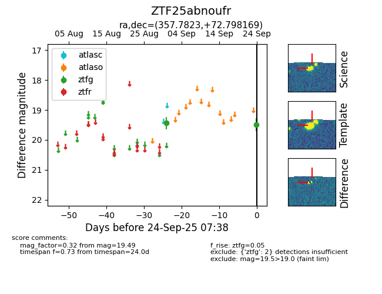

FINK: ZTF25abnoufr
Lasair: ZTF25abnoufr
ALeRCE: ZTF25abnoufr
ZTF25abnoufr (ztf,fink)
equatorial (ra, dec) = (357.7823,+72.79817)
galactic (l, b) = (118.4453,+10.45387)

last ztfg=19.49
2 ztfg detections